每個平假名是哪個漢字的草書，又怎麼寫
| 音 | 平假名 | ← 字源 | 筆順 | 備註 |
|---|---|---|---|---|
| あ行 | ||||
| a | あ | ←安 | 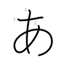 |
|
| i | い | ←以 | 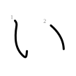 |
|
| u | う | ←宇 | 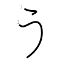 |
同源 |
| e | え | ←衣 | 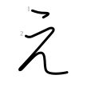 |
|
| o | お | ←於 | 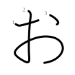 |
同源 |
| か行 | ||||
| ka | か | ←加 | 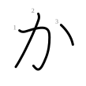 |
同源 |
| ki | き | ←幾 | 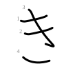 |
同源 |
| ku | く | ←久 | 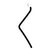 |
同源 |
| ke | け | ←計 | 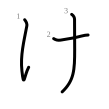 |
|
| ko | こ | ←己 | 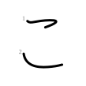 |
同源 |
| さ行 | ||||
| sa | さ | ←左 | 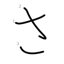 |
|
| shi | し | ←之 | 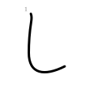 |
同源 |
| su | す | ←寸 | 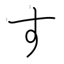 |
|
| se | せ | ←世 | 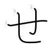 |
同源 |
| so | そ | ←曽 | 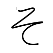 |
同源 |
| た行 | ||||
| ta | た | ←太 | 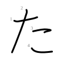 |
|
| chi | ち | ←知 | 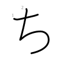 |
|
| tsu | つ | ←川 | 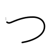 |
同源 |
| te | て | ←天 | 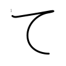 |
同源 |
| to | と | ←止 | 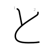 |
同源 |
| な行 | ||||
| na | な | ←奈 | 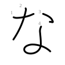 |
同源 |
| ni | に | ←仁 | 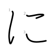 |
|
| nu | ぬ | ←奴 | 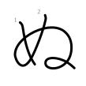 |
同源 |
| ne | ね | ←祢 | 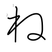 |
同源 |
| no | の | ←乃 | 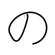 |
同源 |
| は行 | ||||
| ha | は | ←波 | 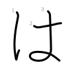 |
|
| hi | ひ | ←比 | 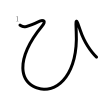 |
同源 |
| fu | ふ | ←不 | 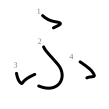 |
同源 |
| he | へ | ←部 | 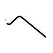 |
同源 |
| ho | ほ | ←保 | 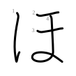 |
同源 |
| ま行 | ||||
| ma | ま | ←末 | 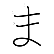 |
同源 |
| mi | み | ←美 | 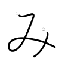 |
|
| mu | む | ←武 | 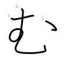 |
|
| me | め | ←女 | 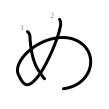 |
同源 |
| mo | も | ←毛 | 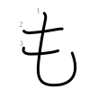 |
同源 |
| や行 | ||||
| ya | や | ←也 | 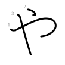 |
同源 |
| yu | ゆ | ←由 | 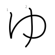 |
同源 |
| yo | よ | ←与 | 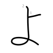 |
同源 |
| ら行 | ||||
| ra | ら | ←良 | 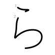 |
同源 |
| ri | り | ←利 | 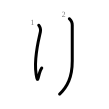 |
同源 |
| ru | る | ←留 | 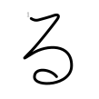 |
|
| re | れ | ←礼 | 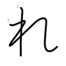 |
同源 |
| ro | ろ | ←呂 | 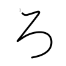 |
同源 |
| わ行 | ||||
| wa | わ | ←和 | 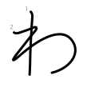 |
同源 |
| wo | を | ←遠 | 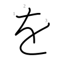 |
|
| ん | ||||
| n | ん | ←无 | 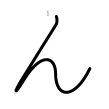 |
|